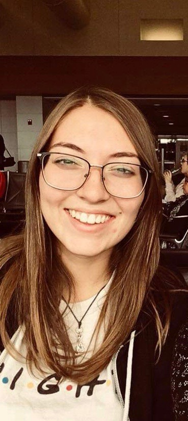

Jazmyn Rivera
Links
Border Crossers
In the Winter Semester of 2018, artist Chico MacMutrie came to the University of Michigan for a residency. He built of team of students from all school at the university to construct an art sculpture that was deployed at the U.S. Mexico Border. The sculpture is a robotic arm that extends up 50ft and over to form an arc. The piece was a commentary on borders, and how a wall could not stop the sharing of culture, language and community between countries.
WISE GISE Summer Camp
In the summer of 2017, as part of Women in Science and Engineering (WISE), we ran a camp for middle school girls interested in science and engineering. The girls rotated through several workshops of biology, physics, chemistry and electrical. I ran the electrical workshop, in which the girls contructed an LED watch from scratch. I taught the girls the basics of circuitry and soldering.
Torta
I'm part of a band called Torta. My friends and I got together in high school and still play today. I play guitar, piano, viola and ukulele.